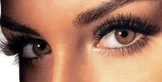

PESTAÑAS
lifting
permanentes

LIFTING, QUE ES Y EN QUE CONSISTE?
El lifting de pestañas consiste en hacer un levantamiento de las mismas y ennegrecerlas, ¿lo mejor?
Que son tuyas, no te pones nada ajeno, por lo que no corres el riesgo de quedarte con tres pestañas, ni que se te
caigan.
"Es un tratamiento que eleva la curvatura de tus pestañas, resaltando la expresión de la mirada y alargando las
pestañas desde la raíz, sin utilizar pelo sintético.
Se consigue gracias a unas almohadillas de silicona que se ajustan al párpado y, en lugar de 'doblar el pelo', lo
estira y eleva hacia la punta, hasta su máximo punto.
Es un sistema cómodo, fácil, rápido, sin olores e indoloro", nos cuentan desde Sundara.
QUÉ ES LA PERMANENTE DE PESTAÑAS?
La permanente de pestañas básicamente riza la pestaña natural.
La curvatura del rizo dependerá de la longitud de la pestaña y del efecto que deseemos conseguir.
El tratamiento se inicia desmaquillando el ojo y aplicando un líquido rizador y un bigudí en la pestaña que se dejan
actuar el tiempo necesario.
Para que el rizo dure más tiempo conviene repetir el tratamiento cada 45 días aproximadamente.
Es un tratamiento rápido y sencillo que dura aproximadamente 1 hora y el efecto es inmediato.